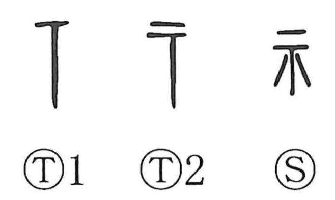

示

Kun: shimesu | On: shi, ji
altar ・ to show ・ to indicate
Explanation
示 began as a pictograph of an altar or offering table set before the deities. In early inscriptions a horizontal top is drawn with lines descending from it—sometimes three, sometimes a single stroke—suggestive of a sacred emanation. The sacrificial graph 祭 makes the scene explicit: a piece of meat (月 used in its old sense of “meat”) is placed on the altar with a hand 又 to make an offering. When the altar is drawn large, with its crossed, tightly braced legs, it gives the form 帝, the august heavenly deity. Because 示 designates the divine sphere, it stands at the heart of words about gods and rites (as in 神 and 神示 “divine revelation”), and from this base it also came to be used in place of 視, giving the extended sense “to show.”